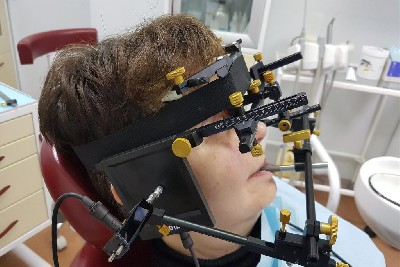
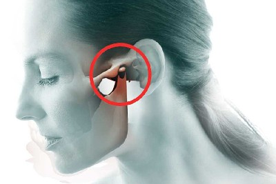

СИМПТОМЫ И ЛЕЧЕНИЕ
ВРАЧИ
УСЛУГИ
Консультация гнатолога
Лечение ВНЧС - боли при открывании рта
Лечение ВНЧС - хруст челюсти
Лечение ВНЧС - ассиметрия лица
Лечение бруксизма - скрежета зубами во сне
Исправление прикуса
Выравнивание зубов
ОБ ИНСТИТУТЕ
О нас
Сотрудники
Оборудование
Отзывы
Записаться
Симптомы и лечение заболеваний ВНЧС
Главная
-----
Симптомы и лечение
Боль в челюсти при открывании рта. Что делать и к кому обращаться
Хрустит челюсть - болезнь Височно-нижнечелюстного сустава
Бруксизм - как избавиться от сильного скрежета зубов во сне
Ассиметрия лица - неправильный прикус: решение проблемы
Болит сразу челюсть и голова - что делать?

Диагностика ВНЧС

Щелкает нижняя челюсть